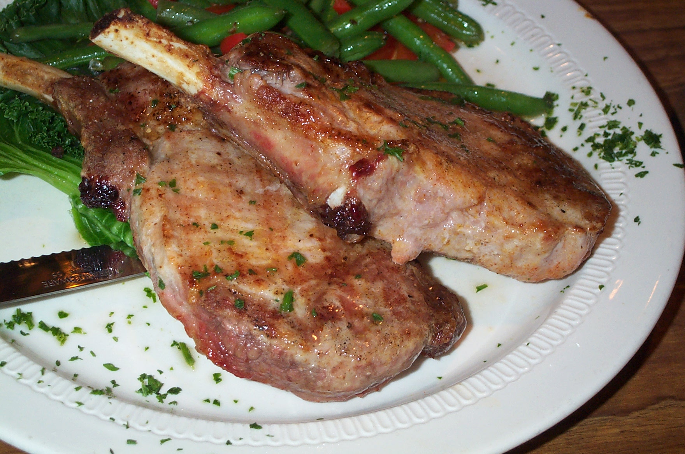

| Ingredients | Directions |
|---|---|
| Marinade |
Marinade the porkchop in oil and herbs or marinade. For example you could use italian herb marinade. |
| Pork Chop | Grill the porkchop on the grill until cooked |
| Lettuce | Crunch the head of lettuce to make a salad and add toppings. |
| Bacon | Put bacon on the salad |
| Cheese | Cover salad with cheese |
| Dressing |
Add your favorite dressing to the salad. Make sure to add so much that the salad is no longer nutritious at all |
For extra flavoring you can add salt and pepper to the salad